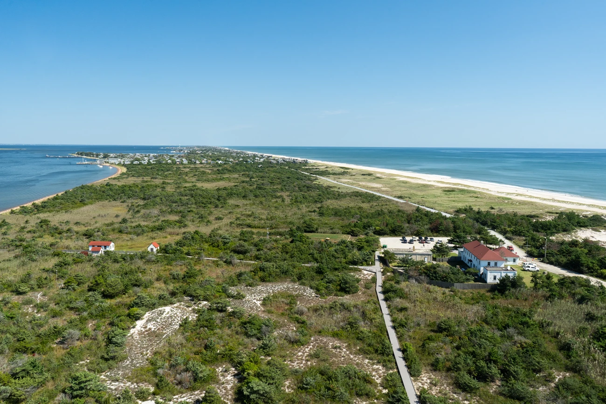
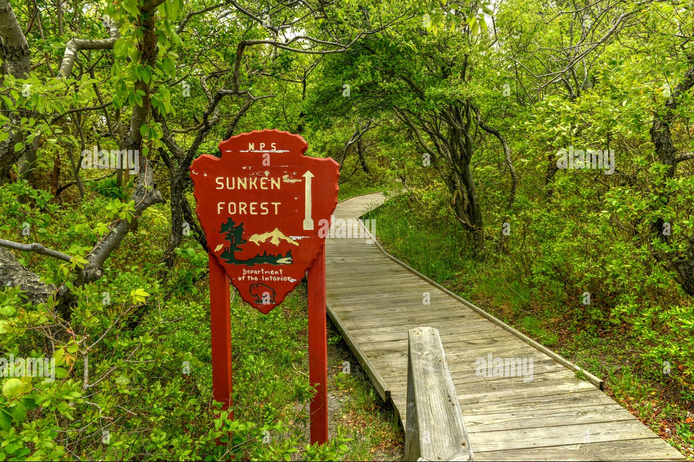

My trip to Fire Island was one for books. The Island is very calm giving one a peaceful escape from the busy life.
Being on the Island allows you to connect with nature since the Island is car-free. Walking along the beach with your bare feet is such a soothing experience.
The Park has so many incredible places to visit. Some of these sites are; the Sunken forest which is a maritime forest,William Floyd Estate; an independence historical site, and a historical light house which is the main landmark.

Book a trip to Fire Island to experience the magical beaches, a peaceful walk on the sunken forest, beautiful views from the lighthouse and so much more!
Explore more